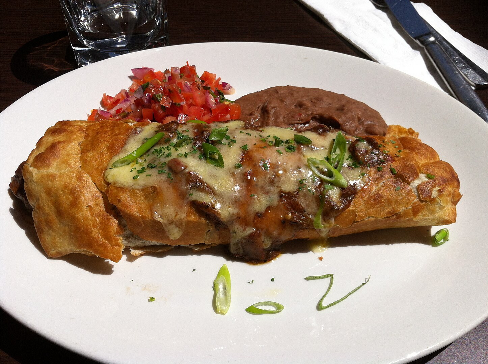

🧛♀️Goth girl chimichangas🇲🇽

Description
A goth girl once arrived to a picnic with 24 of those. They were delicious, if you are vegan you can replace the sausage with whatever, or just use beans.
Dry ingredients
24 flour tortillas
3 potatoes (any type)
1 liter of refried beans
Oil
(Optional)
Cheese
Steps
Peel the potatoes, cut them in half, and use a grater to slice them into thin pieces.
Cut the sausages into quarters or smaller pieces, depending on how large you want them.
Start making the chimichangas by spreading a layer of beans on a tortilla. Add the potato slices and sausage pieces along the edge (adjust the amount based on how stuffed you want them).
Once you have all the chimichangas prepared (if you don't make all 24 or make extras, you can use toothpicks to keep them closed while frying).
In a skillet, pour enough oil to reach about 1/4 to 1/2 inch depth. Heat the oil over medium-high heat. Once the oil is hot, carefully add the chimichangas.
Fry them for approximately 2 minutes on one side, then flip them to fry the other side until they turn golden brown. Remove from the oil and place on a plate or container lined with paper towels to absorb the excess oil.
Repeat the frying process until all the chimichangas are cooked. Serve as desired (if you want to add cheese, do so when adding the potatoes and sausage to the tortilla).